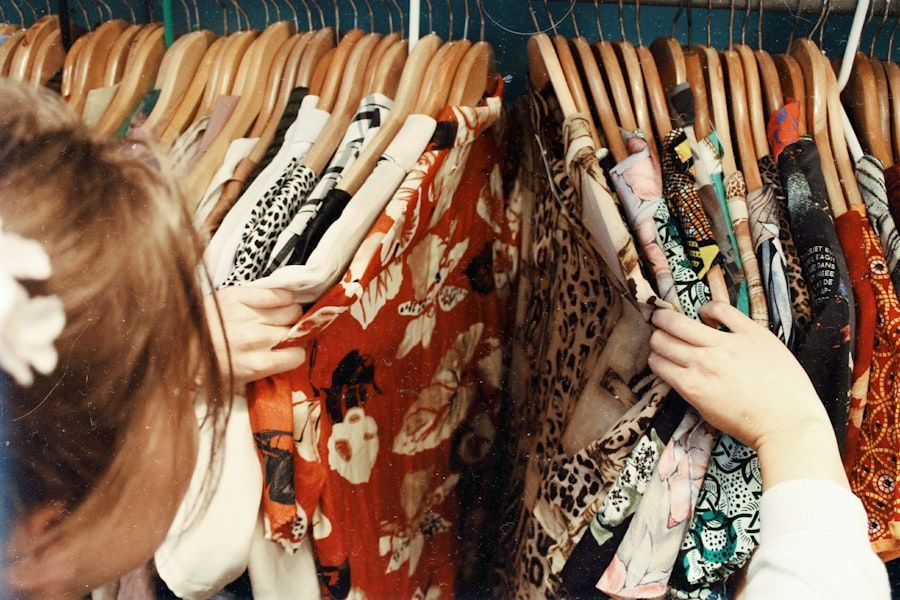
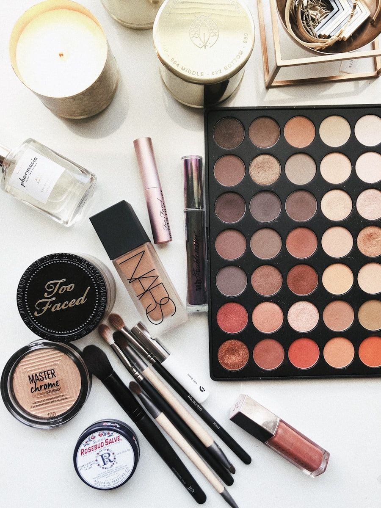

Demystifying Leather Classifications: Full-Grain, Top-Grain, and Split
The luxury leather goods market is rife with confusing, intentionally opaque marketing nomenclature. Terms like 'genuine leather', 'top-grain leather', and 'saffiano' are frequently deployed by commercial fashion conglomerates to mask heavily processed, low-grade hides. To truly appreciate the longevity and beauty of an authentic luxury tote, collectors must understand the anatomical hierarchy of animal hides: full-grain, top-grain, and split leather.
The hide of a calf consists of two primary anatomical zones: the upper papillary dermis (full-grain) and the lower reticular dermis (split). The uppermost surface of the hide—the full-grain layer—features the densest, most tightly interwoven collagen fiber bundles in the animal kingdom. It is also the layer that bore the animal's natural life markings, micro-creases, and microscopic pores. In mass-market manufacturing, tanneries sand away this pristine outer layer ('corrected grain' or 'top-grain') to eliminate minor cosmetic irregularities, embossing an artificial plastic grain onto the sanded surface. In doing so, they decapitate the hide's strongest fibers, rendering it structurally weak and incapable of developing a rich patina.

Structural Breakdown: Full-Grain vs. Corrected Grain under Metallic Foil
The table below outlines how different hide grades interact with metallic foils over extended multi-year ownership lifecycles.
| Hide Classification | Dermal Layer Integrity | Metallic Foil Interaction | Ten-Year Aging Behavior | Maison Allocation |
|---|---|---|---|---|
| Full-Grain (Pieno Fiore) | 100% Intact Papillary Dermis; Uncorrected | Molecular vapor bond into natural pores | Softens, develops rich micro-crinkle luster | 100% of MetallicTote Collections |
| Corrected Top-Grain | Upper 20-30% sanded away; Embossed | Polyurethane glue film over sanded hide | Foil dulls, micro-cracks form along folds | Strictly Prohibited at MetallicTote |
| Split Leather (Crosta) | Lower reticular layer with zero grain | Heavy plastic laminate required for cohesion | Peels in large sheets, structural tears occur | Strictly Prohibited at MetallicTote |
| Bonded Leather | Reconstituted leather scrap dust + resin | Direct vinyl foil extrusion | Completely disintegrates within 18 months | Strictly Prohibited at MetallicTote |
Why Metallic Foil Demands Uncorrected Full-Grain Substrates
When commercial manufacturers apply metallic foil to sanded top-grain or split leather, the results are invariably disastrous. Because the natural epidermal grain has been removed, the plastic foil must be affixed with thick polyurethane glue. The resulting composite behaves like plastic wrap stretched over cardboard: it cannot breathe, it feels cold and artificial to the touch, and when bent repeatedly, the brittle plastic foil separates from the underlying fiber base, cracking into unsightly white fissures.
MetallicTote rejects corrected-grain leather without exception. We utilize exclusively pristine full-grain calfskins whose surface dermal layer is entirely intact. When our vacuum vapor metallization is applied, the microscopic metal atoms nestle directly around the natural dermal pores and collagen fibers. The leather retains its organic porosity, supple hand-feel, and natural drape dynamics. The bag feels warm, alive, and buttery in the patron's hands.

The Philosophy of Heirloom Aging: Patina as Luxury Provenance
In disposable consumer fashion, age is equated with decline: shoes scuff, synthetic bags peel, and cheap hardware discolors. In authentic haute maroquinerie, however, age is the ultimate collaborator. A full-grain metallic tote bag carried over five or ten years absorbs natural oils, conforms to the curves of the owner's arm, and develops a lustrous, multifaceted depth of shine that cannot be simulated in a factory.
This softening of the metallic sheen—where sharp mirrored reflections evolve into an ambient, glowing golden warmth—is celebrated by connoisseurs as the bag's unique biography. It marks the tote not as a fleeting seasonal purchase, but as an enduring companion of distinction.
Histological Analysis of the Papillary and Reticular Dermis
To understand why full-grain leather is irreplaceable in luxury maroquinerie, one must examine its microscopic histology. The upper papillary dermis consists of an intricate, three-dimensional woven feltwork of type I and type III collagen fibrils intertwined with elastin proteins. This dense biological matrix provides immense tear resistance, puncture resistance, and natural elasticity that synthetic polymers can only superficially mimic.
When mass-market manufacturers sand away the grain to produce 'top-grain' or 'corrected leather,' they decapitate this interwoven feltwork, exposing the looser, parallel fibers of the lower reticular dermis. Deprived of its dense outer skin, the leather loses its structural tension, becoming prone to stretching out of shape and absorbing moisture that degrades the hide from within. By retaining the uncorrected full-grain layer, MetallicTote ensures that every bag possesses the structural bedrock required to endure for decades.
The Sensory Dimension: Tactile Warmth and Olfactory Signature
True luxury appeals to all human senses simultaneously. A synthetic metallic bag made from PVC or bonded split leather emits a cold, chemical odor of plasticizers and polyurethane resins. In contrast, an authentic full-grain metallic tote from our Milanese atelier possesses an intoxicating, warm olfactory signature of rich vegetable tannins, sweet chestnut extracts, and pure beeswax.
When brushed with the fingertips, the surface yields with a buttery, tactile suppleness, warming quickly to the touch of the palm. Connoisseurs recognize this sensory symphony immediately: it is the undeniable signature of unhurried Italian craftsmanship and noble raw materials treated with reverence.
Connoisseur Authentication: Identifying Genuine Full-Grain Substrates
For collectors evaluating luxury leather acquisitions, several reliable diagnostics distinguish genuine full-grain metallic hides from corrected substitutes. First, examine the surface under a ten-power jeweler's loupe: authentic full-grain displays microscopic, irregular hair follicle pores embedded beneath the metallic foil, whereas synthetic corrected grains show a sterile, perfectly uniform embossed pebble pattern. Second, perform the tactile warmth test: genuine full-grain calfskin warms to body temperature within three seconds of palm contact, whereas polyurethane-coated splits remain distinctly chilly. These subtle sensory signatures provide incontrovertible proof of noble artisan provenance.
Atelier Inquiries & Bespoke Consultation
Experience the tactile depth of our vacuum-metallized Tuscan leathers firsthand. Connect with our Milanese concierge to request personalized leather swatches or initiate an individual bespoke commission.
Connect with Atelier Concierge